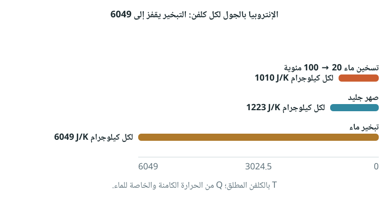

كيف نحسب تغيّر الإنتروبيا عند تسخين الماء وتغيّر حالته؟
Entropy change during heating and phase transitions
يبين المقال كيف يدخل مقدار الحرارة ودرجة الحرارة المطلقة في حساب تغيّر الإنتروبيا، ويقارن بين تسخين الماء وصهر الجليد وتبخير الماء.
تعتمد إنتروبيا الماء على حالته. ولحساب تغيّرها بين حالتين، نختار مسارًا عكوسًا يصل بينهما، ونحسب مقدار الحرارة المتبادلة عند كل درجة حرارة مطلقة على طول المسار.
عند الانصهار أو الغليان عند ضغط ثابت، تبقى درجة حرارة الماء النقي ثابتة ما دام الطوران في اتزان. يمكن عندئذ قسمة الحرارة الكامنة على درجة الحرارة المطلقة. أما في تسخين الماء السائل، فتتغيّر درجة الحرارة تدريجيًا، ولذلك نستخدم التكامل.
كيف تعمل الظاهرة؟
الإنتروبيا عدّاد للحالات الدقيقة المتاحة لمنظومة عند طاقة معيّنة. عند الصهر تنفلت الجزيئات من مواقعها الشبكية إلى مواقع سائلة أكثر حرية، فيزداد العدد. عند التبخّر تنفصل كلياً وتتحرك في حجم أكبر بمراتب، فيقفز العدد قفزة كبيرة — ولهذا رقم التبخير أكبر بخمسة أضعاف.
العلاقة بالأرقام
لصهر كيلوغرام من الجليد عند 273.15 كلفن، يعطي قسمة 334,000 جول على درجة الحرارة نحو 1223 جول/كلفن. ولتبخير الكيلوغرام نفسه عند 373.15 كلفن، يعطي قسمة 2,257,000 جول نحو 6049 جول/كلفن. وتسخينه من 20 إلى 100 درجة مئوية يعطي نحو 1010 جول/كلفن بتكامل السعة الحرارية مقسومةً على درجة الحرارة.
مفاهيم متقاربة
إنتروبيا عالية لا تعني «غير منظّم» بالمعنى اليومي: بلورة منظّمة قد تكون إنتروبيتها أعلى من غاز مضغوط إن كان الغاز بارداً جداً. المقياس يخصّ عدد الحالات المتاحة، لا شكل الترتيب الظاهر. والقول الشائع «الكون يسير إلى الفوضى» ترجمة فضفاضة لزيادة الإنتروبيا الكلية في عملية تلقائية.
حدود التطبيق
تُستعمل العلاقة ΔS = Qrev/T لمسار عكوس متساوي الحرارة. وعندما تتبدّل درجة الحرارة نكامل الحرارة العكوسة مقسومة على درجة الحرارة المطلقة. وفي عملية فعلية غير عكوسة يمكن حساب تغيّر إنتروبيا المنظومة بمسار عكوس بديل بين الحالتين نفسيهما.

| الكمية | القيمة | المصدر |
|---|---|---|
| تغيّر الإنتروبيا عند صهر 1 كجم جليد | 1223 J/K | [1] |
| تغيّر الإنتروبيا عند تبخير 1 كجم ماء | 6049 J/K | [1] |
| تغيّر الإنتروبيا عند تسخين 1 كجم ماء 20→100 | 1010 J/K | [1] |
المصادر
- 1 College Physics 2e — Entropy and the Second Law of Thermodynamics — OpenStax. openstax.org/books/college-physics-2e/pages/15-6-entropy-and-the-second-law-of-thermodynamics-disorder-and-the-unavailability-of-energy · اطُّلع عليه 2026-11-17
- 2 College Physics 2e — Phase Change and Latent Heat — OpenStax. openstax.org/books/college-physics-2e/pages/14-3-phase-change-and-latent-heat · اطُّلع عليه 2026-11-17
راجعه: مراجعة آلية — ديوان المعرفة (أرقام محسوبة + مصادر متحققة) 2026-11-16 · 2026-11-16 · آخر تحديث 2026-11-17
رجوع إلى المقالات